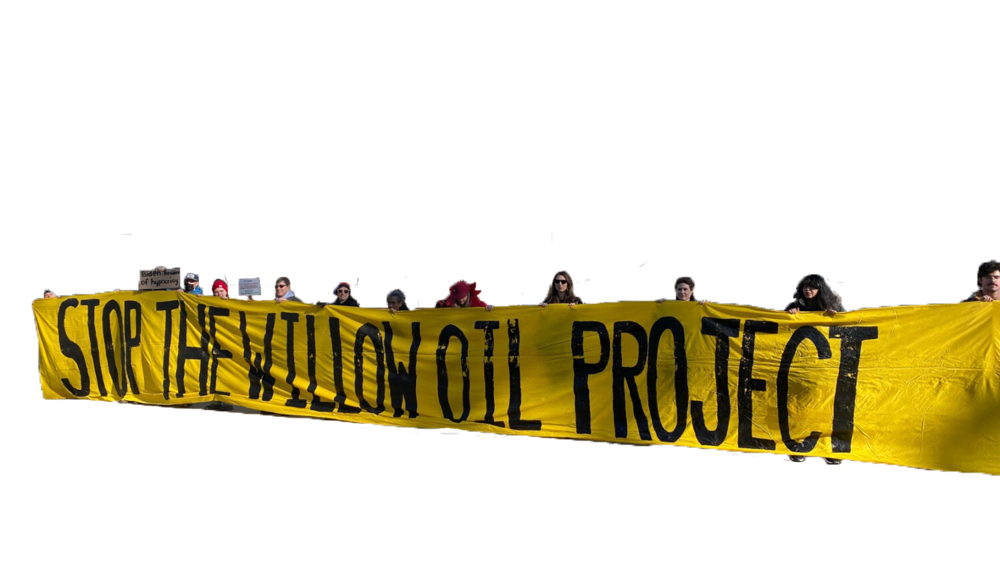

The Willow Project
With the continuous fight against climate change, the Willow Project proves to be a forceful drawback.


What is it?
The Willow Project is an oil development venture by ConocoPhillips located on the National Petroleum Reserve in Alaska. It's projected to produce up to 180,000 barrels of oil a day. It would create up to a third of the emissions created from all of the coal plants across the country, contributing to further environmental harm.
"By the administration's own estimates, the project would generate enough oil to release 9.2 million metric tons of planet-warming carbon pollution a year - equivalent to adding 2 million gas-powered cars to the roads." - CNN
The approval of the project by the Biden administration has incited mass protest by climate activists. In retort, the government sees the project as a potential economic boost by creating jobs in the local area and generating revenue. This action has drawn criticism by the derailment of Biden's own climate goals made on his campaign promises, claiming to make effort in reducing environmental pollution in half by 2030. In turn, Biden has restricted the US Arctic Ocean and, aim to, 13 million acres in the federal National Petroleum Reserve in Alaska from fossil fuel leasing. But environmental groups has called the impending impact of the Willow Project incomperable to the future fossil fuel leasing restrictions. They have taken actions to bring the project to court in an attempt to revert the approval of the project.